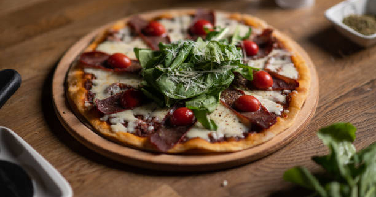

Pizza Casera

Descripción
Receta de Cocineros Argentinos para preparar masa de pizza cesera
Ingredientes
- Harina 0000: 1 kg
- Sal: 20 grs
- Aceite: 4 cucharadas
- Agua: 550 cc
- Levadura fresca: 50 grs
Pasos
- Colocar la harina en un bol
- Hacer un hueco en el centro
- En una tasa agregar la levadura y un poco de agua tibia
- Mezclar bien e incorporar en el centro del bol
- Salar por el perimetro del bol sin tirar sal en nuestra levadura
- Agregar el aceite y un poco de agua
- Empezar a amasar agregando agua segun sea necesario
- Dejar leudar tapada hasta que logre el doble de su tamaño
- Separar en 4 bollos y estirar en fuentes
- Colorar salsa a gusto y hornear
- Agregar queso (o lo que deses ponerle) y volver al horno
- sacar luego de 3-5 minuto y servir
Menu Principal